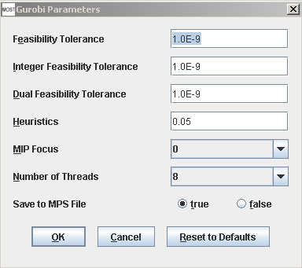
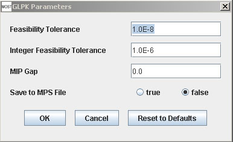
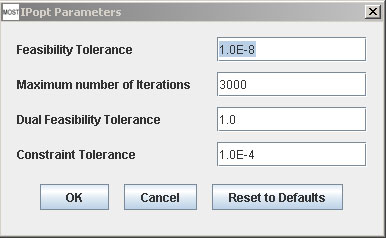

Metabolic Optimization and Simulation Tool
|
Help Topics
|
Solver Parameters Gurobi Parameters Select Options –> Set Gurobi Parameters (Alt+O then Alt+G). The Set Gurobi Parameters dialog will appear:  Gurobi Parameters Descriptions: Feasibility Tolerance – Primal feasibility tolerance. Integer Feasibility Tolerance – Integer feasibility tolerance. Only affects mixed integer programming (MIP) models. Dual Feasibility Tolerance – Optimality tolerance. Heuristics – Turn mixed integer programming (MIP) heuristics up or down. Only affects MIP models MIP Focus – Set the focus of the mixed integer programming (MIP) solver. Only affects MIP models Number of Threads – Number of parallel threads to use. Save to MPS File - MOST can write a mixed integer programming (MIP) problem to an MPS (Mathematical Programming System) file if true is selected. The MPS file can be accessed from the Console Menu "View MPS File" menu item. The Gurobi Reference Manual contains descriptions of Gurobi solver parameters. GNU Linear Programming Kit (GLPK) Parameters Select Options –> Set GLPK Parameters (Alt+O then Alt+L). The Set GLPK Parameters dialog will appear:  The GNU Linear Programming Kit Reference Manual contains descriptions of GLPK solver parameters. Feasibility Tolerance, Integer Feasibility Tolerance - see GLPK Reference Manual pg. 67. MIP gap - also known as the duality gap (GLPK Reference Manual pg. 126). Save to MPS File - MOST can write a mixed integer programming (MIP) problem to an MPS (Mathematical Programming System) file if true is selected - see GLPK Reference Manual, Appendix B. The MPS file can be accessed from the Console Menu "View MPS File" menu item. Ipopt Parameters Select Options –> Set Ipopt Parameters (Alt+O then Alt+l). The Set Ipopt Parameters dialog will appear:  Descriptions of Ipopt parameters can be found here. Ipopt will detect and choose HSL or Pardiso solvers as default if they are placed in the "MOST" installation directory lib/win32, lib/win64, lib/linux, or lib/mac subdirectories and will use MUMPS Linear Solver if these solvers are not available. HSL is the highest priority. HSL website: http://www.hsl.rl.ac.uk/ipopt/ Pardiso website: http://www.pardiso-project.org/ |